library(tidyverse)
# Incluye los siguientes paquetes:
# - readr: para la lectura de ficheros csv.
# - dplyr: para el preprocesamiento y manipulación de datos.
# - ggplot2: para la representación gráfica.
library(knitr) # para el formateo de tablas.
library(kableExtra) # para personalizar el formato de las tablas.3 Distribuciones de frecuencias y representaciones gráficas
3.1 Ejercicios Resueltos
Para la realización de esta práctica se requieren los siguientes paquetes:
Ejercicio 3.1 En una encuesta a 25 matrimonios sobre el número de hijos que tenían se obtuvieron los siguientes datos:
| 1, 2, 4, 2, 2, 2, 3, 2, 1, 1, 0, 2, 2, 0, 2, 2, 1, 2, 2, 3, 1, 2, 2, 1, 2 |
- Crear un conjunto de datos con la variable
hijos.
Solución
df <- data.frame(hijos = c(1, 2, 4, 2, 2, 2, 3, 2, 1, 1, 0, 2, 2, 0, 2, 2, 1, 2, 2, 3, 1, 2, 2, 1, 2))- Construir la tabla de frecuencias.
Solución 1
Para obtener las frecuencias absolutas se puede usar la función table, y para las frecuencias relativas la función prop.table ambas del paquete base de R.
# Frecuencias absolutas.
ni <- table(df$hijos)
# Frecuencias relativas
fi <- prop.table(ni)
# Frecuencias acumuladas.
Ni <- cumsum(ni)
# Frecuencias relativas acumuladas.
Fi <- cumsum(fi)
# Creación de un data frame con las frecuencias.
tabla_frec <- cbind(ni, fi, Ni, Fi)
tabla_frec ni fi Ni Fi
0 2 0.08 2 0.08
1 6 0.24 8 0.32
2 14 0.56 22 0.88
3 2 0.08 24 0.96
4 1 0.04 25 1.00
Solución 2
Otra alternativa es usar la función count del paquete dplyr.
library(dplyr)
library(knitr)
library(kableExtra)
count(df, hijos) %>%
mutate(fi = n/sum(n), Ni = cumsum(n), Fi = cumsum(n)/sum(n)) %>%
kable() %>%
kable_styling(bootstrap_options = "hover", full_width = F)| hijos | n | fi | Ni | Fi |
|---|---|---|---|---|
| 0 | 2 | 0.08 | 2 | 0.08 |
| 1 | 6 | 0.24 | 8 | 0.32 |
| 2 | 14 | 0.56 | 22 | 0.88 |
| 3 | 2 | 0.08 | 24 | 0.96 |
| 4 | 1 | 0.04 | 25 | 1.00 |
- Dibujar el diagrama de barras de las frecuencias absolutas, relativas, absolutas acumuladas y relativas acumuladas.
Solución 1
Para dibujar un diagrama de barras se puede usar la función barplot del paquete graphics.
# Diagrama de barras de frecuencias absolutas.
barplot(ni, col = "steelblue", main="Distribución del número de hijos", xlab="Hijos", ylab="Frecuencia absoluta")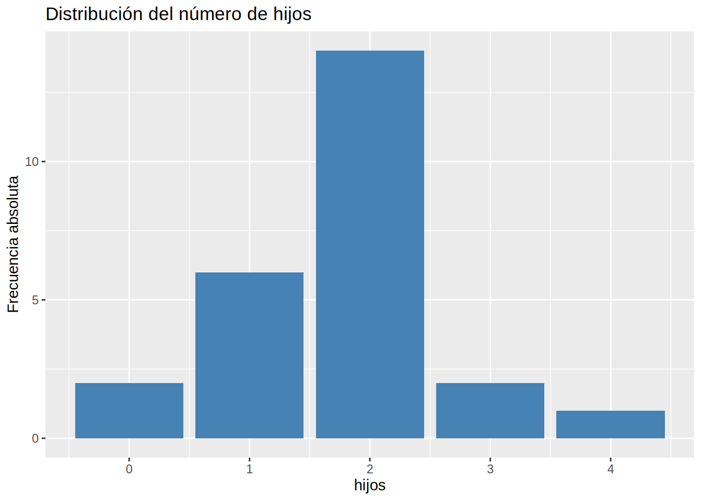
# Diagrama de barras de frecuencias relativas.
barplot(fi, col = "steelblue", main="Distribución del número de hijos", xlab="Hijos", ylab="Frecuencia relativa")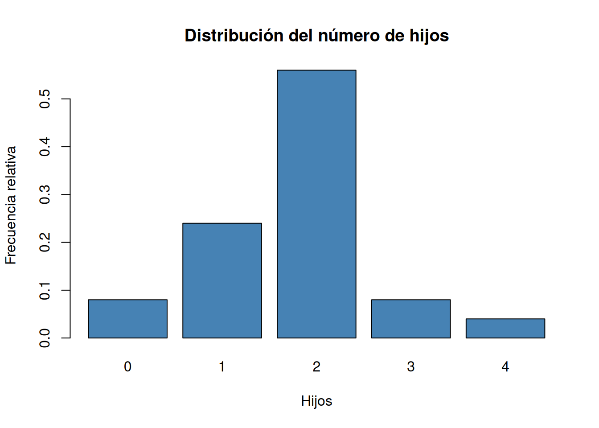
# Diagrama de barras de frecuencias absolutas acumuladas.
barplot(Ni, col = "steelblue", main="Distribución acumulada del número de hijos", xlab="Hijos", ylab="Frecuencia absoluta acumulada")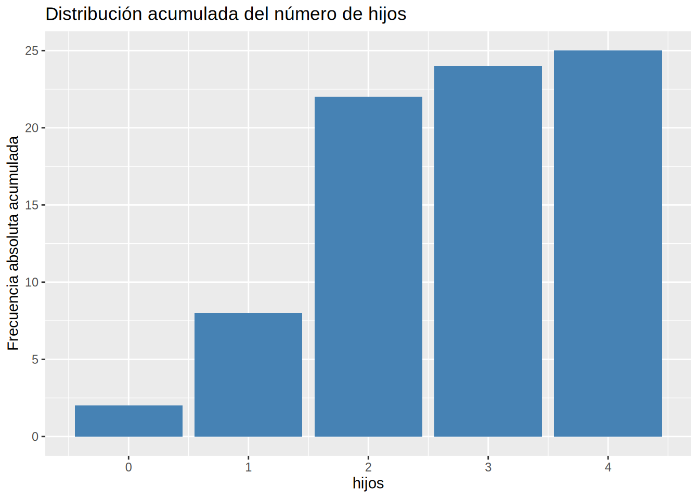
# Diagrama de barras de frecuencias relativas acumuladas.
barplot(Fi, col = "steelblue", main="Distribución acumulada del número de hijos", xlab="Hijos", ylab="Frecuencia relativa acumulada")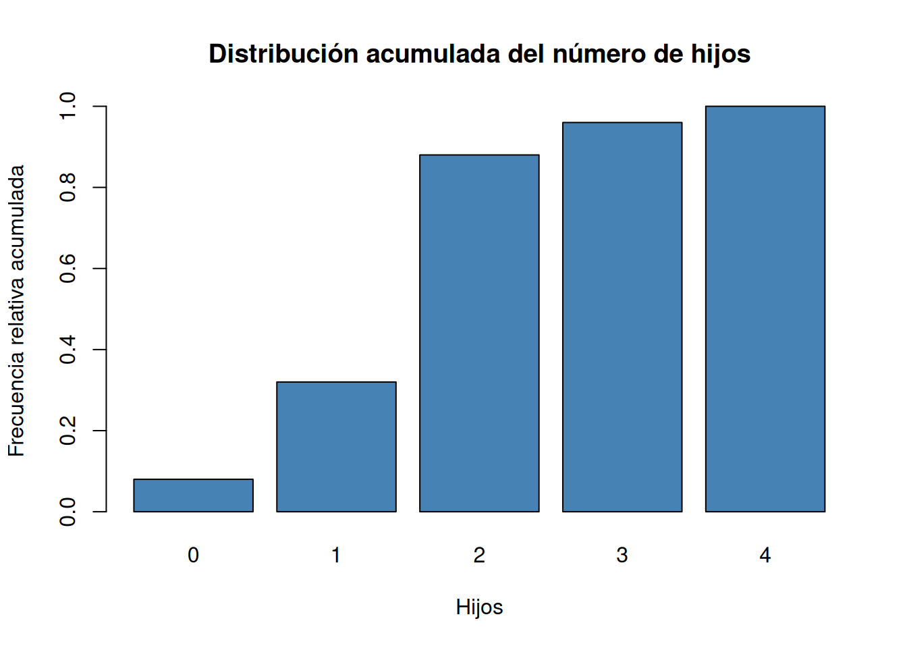
Solución 2
Otra alternativa es usar la función la función geom_bar del paquete ggplot2.
library(ggplot2)
# Diagarma de barras de frecuencias absolutas
ggplot(df, aes(x = hijos)) +
geom_bar(fill = "steelblue") +
labs(title = "Distribución del número de hijos", y = "Frecuencia absoluta")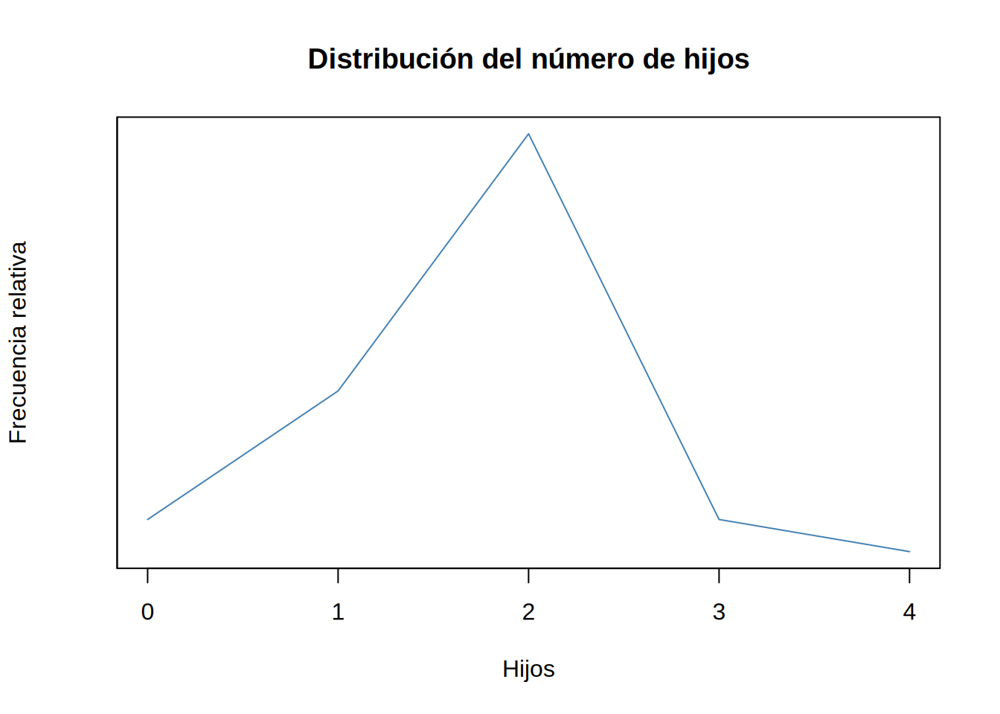
# Diagarma de barras de frecuencias relativas
ggplot(df, aes(x = hijos)) +
geom_bar(aes(y = (..count..)/sum(..count..)), fill = "steelblue") +
labs(title = "Distribución del número de hijos", y = "Frecuencia relativa")Warning: The dot-dot notation (`..count..`) was deprecated in ggplot2 3.4.0.
ℹ Please use `after_stat(count)` instead.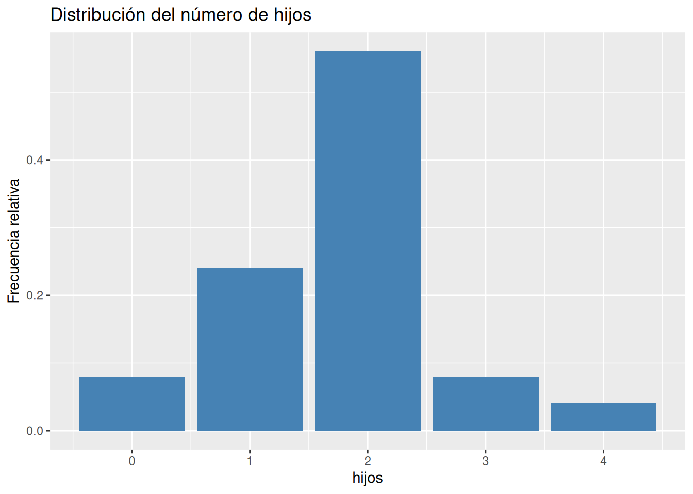
# Diagarma de barras de frecuencias acumuladas
ggplot(df, aes(x = hijos)) +
geom_bar(aes(y = cumsum(..count..)), fill = "steelblue") +
labs(title = "Distribución acumulada del número de hijos", y = "Frecuencia absoluta acumulada")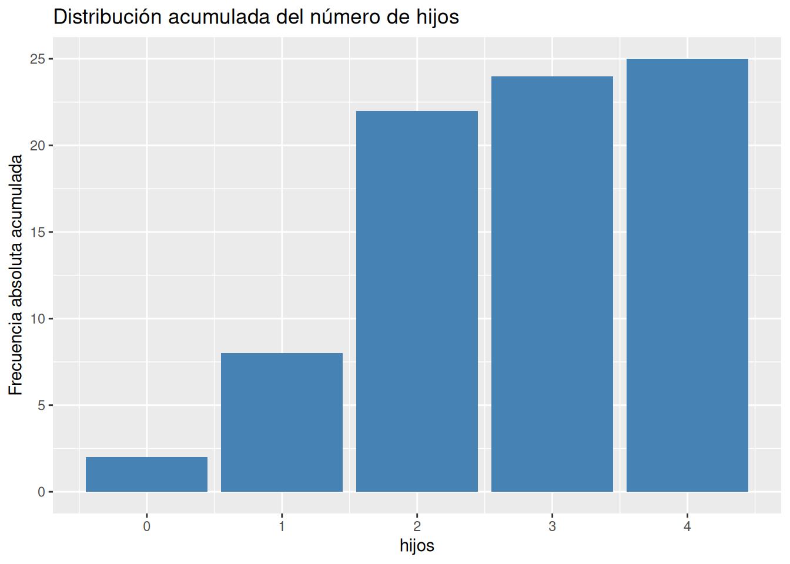
# Diagarma de barras de frecuencias acumuladas
ggplot(df, aes(x = hijos)) +
geom_bar(aes(y = cumsum(..count..)/sum(..count..)), fill = "steelblue") +
labs(title = "Distribución acumulada del número de hijos", y = "Frecuencia relativa acumulada")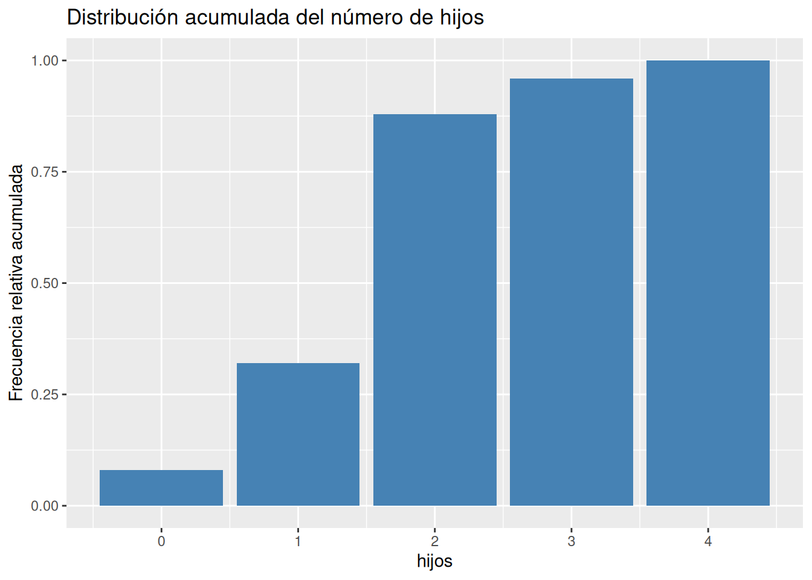
- Dibujar el polígono de frecuencias relativas.
Solución 1
Para dibujar un diagrama de lineas se puede usar la función plot del paquete graphics.
# Frecuencias relativas.
plot(names(fi), fi, type = "l", col = "steelblue", main="Distribución del número de hijos", xlab="Hijos", ylab="Frecuencia relativa")
Solución 2
Otra alternativa es usar la función la función geom_line del paquete ggplot2.
library(ggplot2)
count(df, hijos) %>%
mutate(fi = n/sum(n)) %>%
ggplot(aes(x=hijos, y=fi)) +
geom_line(col = "steelblue") +
labs(title = "Distribución del número de hijos", y = "Frecuencia relativa")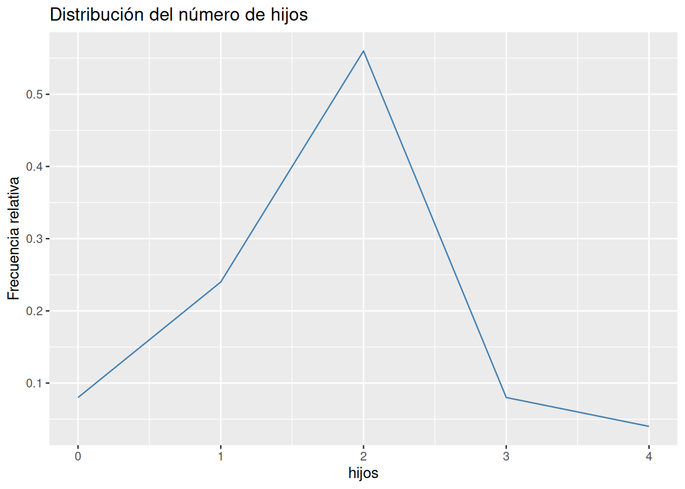
Ejercicio 3.2 En un servicio de atención al cliente se han registrado el número de llamadas de clientes cada día del mes de noviembre, obteniendo los siguientes datos:
| 15, 23, 12, 10, 28, 50, 12, 17, 20, 21, 18, 13, 11, 12, 26, 30, 6, 16, 19, 22, 14, 17, 21, 28, 9, 16, 13, 11, 16, 20 |
- Crear un conjunto de datos con la variable
llamadas.
Solución
df <- data.frame(llamadas = c(15, 23, 12, 10, 28, 50, 12, 17, 20, 21, 18, 13, 11, 12, 26, 30, 6, 16, 19, 22, 14, 17, 21, 28, 9, 16, 13, 11, 16, 20))- Dibujar el diagrama de cajas. ¿Existe algún dato atípico? En el caso de que exista, eliminarlo y proceder con los siguientes apartados.
Solución 1
Para dibujar un diagrama de cajas se puede usar la función boxplot del paquete graphics.
# Frecuencias relativas.
boxplot(df$llamadas, col = "steelblue", main="Distribución del número de llamadas", horizontal = T, xlab="Número de llamadas")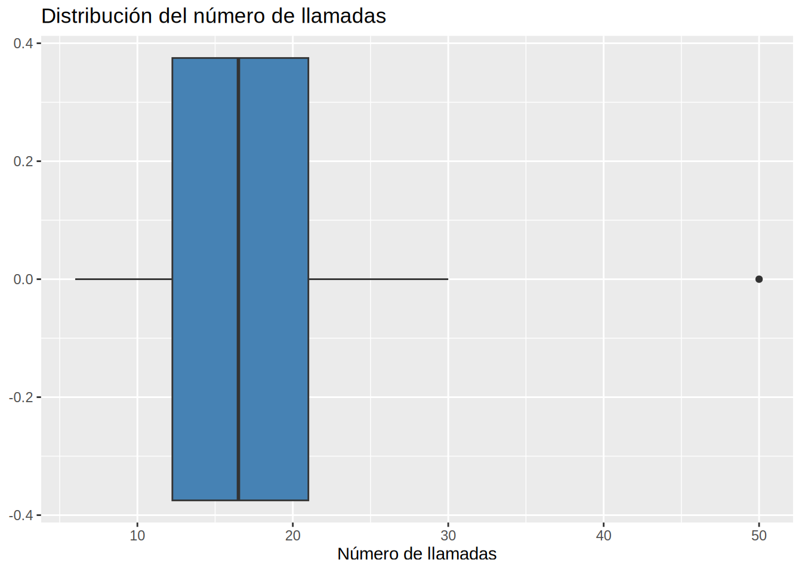
Solución 2
Otra alternativa es usar la función la función geom_boxplot del paquete ggplot2.
library(ggplot2)
ggplot(df, aes(x = llamadas)) +
geom_boxplot(fill = "steelblue") +
labs(title = "Distribución del número de llamadas", x = "Número de llamadas")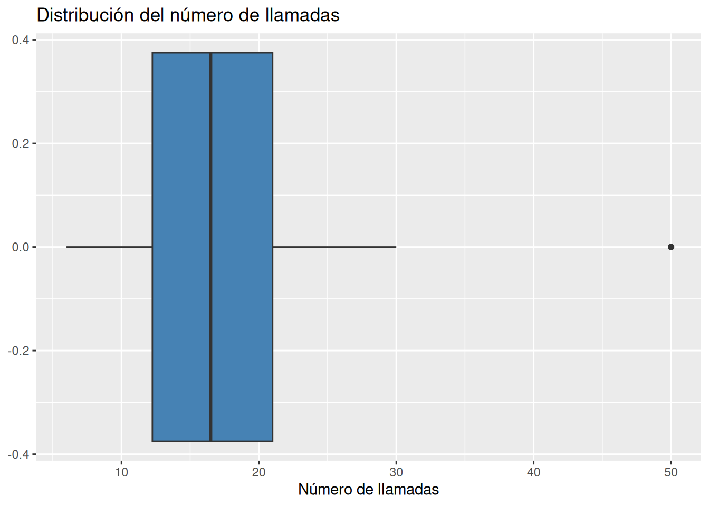
Hay un día con 50 llamadas, que es un valor atípico en comparación con el resto de días.
Solución
La función cut
# Eliminación del dato atípico.
df <- df[df$llamadas != 50, , drop = F]- Construir la tabla de frecuencias agrupando en 5 clases.
Solución 1
Para agrupar los datos en intervalos se puede utilizar la función cut del paquete base de R, y para contar las frecuencias absolutas y relativas las funciones table, y prop.table respectivamente.
# Frecuencias absolutas. Creación automática de 5 clases con intervalos cerrados a la izquierda.ni <- table(cut(df$llamadas, breaks = 5, right = F))
# Creación manual de 5 clases.
ni <- table(cut(df$llamadas, breaks = seq(5, 30, 5)))
# Frecuencias relativas
fi <- prop.table(ni)
# Frecuencias acumuladas.
Ni <- cumsum(ni)
# Frecuencias relativas acumuladas.
Fi <- cumsum(fi)
# Creación de un data frame con las frecuencias.
tabla_frec <- cbind(ni, fi, Ni, Fi)
tabla_frec ni fi Ni Fi
(5,10] 3 0.1034483 3 0.1034483
(10,15] 9 0.3103448 12 0.4137931
(15,20] 9 0.3103448 21 0.7241379
(20,25] 4 0.1379310 25 0.8620690
(25,30] 4 0.1379310 29 1.0000000
Solución 2
Otra alternativa es usar la fución count del paquete dplyr.
library(dplyr)
library(knitr)
library(kableExtra)
mutate(df, llamadas_int = cut(llamadas, breaks = seq(5, 30, 5))) %>%
count(llamadas_int) %>%
mutate(fi = n/sum(n), Ni = cumsum(n), Fi = cumsum(n)/sum(n)) %>%
kable() %>%
kable_styling(bootstrap_options = "hover", full_width = F)| llamadas_int | n | fi | Ni | Fi |
|---|---|---|---|---|
| (5,10] | 3 | 0.1034483 | 3 | 0.1034483 |
| (10,15] | 9 | 0.3103448 | 12 | 0.4137931 |
| (15,20] | 9 | 0.3103448 | 21 | 0.7241379 |
| (20,25] | 4 | 0.1379310 | 25 | 0.8620690 |
| (25,30] | 4 | 0.1379310 | 29 | 1.0000000 |
- Dibujar el histograma de frecuencias absolutas, relativas, absolutas acumuladas y relativas acumuladas correspondiente a la tabla anterior.
Solución 1
Para dibujar un histograma se puede usar la función hist del paquete graphics.
# Histograma de frecuencias absolutas.
histo <- hist(df$llamadas, breaks = seq(5, 30, 5), col = "steelblue", main="Distribución del número de llamadas", xlab="Llamadas", ylab="Frecuencia absoluta")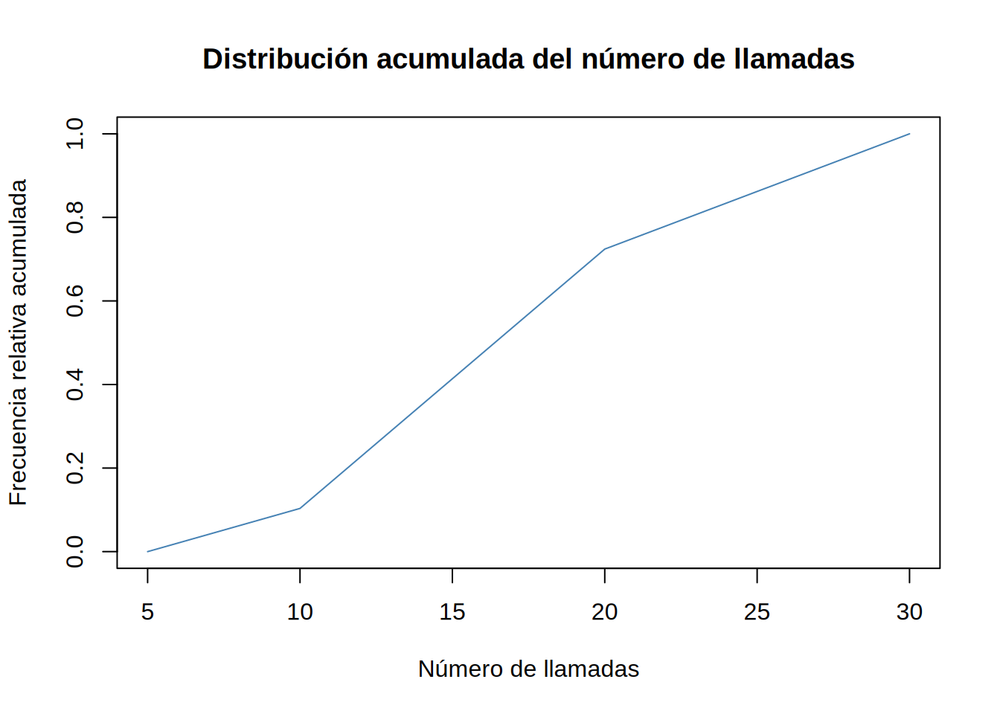
ni <- histo$counts
# Histograma de frecuencias relativas.
histo$counts <- ni/sum(ni)
plot(histo, col = "steelblue", main="Distribución del número de llamadas", xlab="Llamadas", ylab="Frecuencia relativa")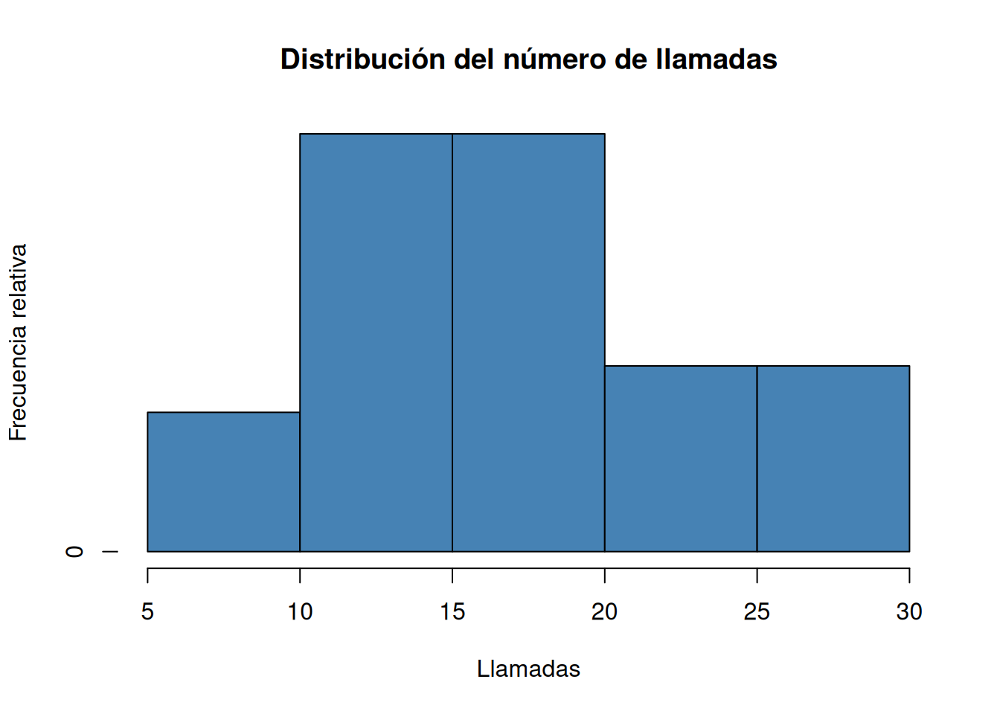
# Histograma de frecuencias absolutas acumuladas.
histo$counts <- cumsum(ni)
plot(histo, col = "steelblue", main="Distribución acumulada del número de llamadas", xlab="Llamadas", ylab="Frecuencia absoluta acumulada")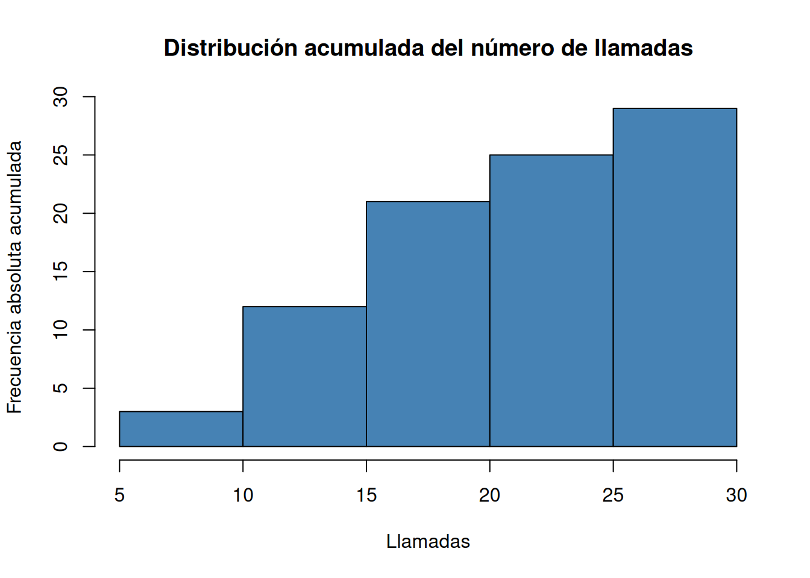
# Histograma de frecuencias relativas acumuladas.
histo$counts <- cumsum(ni)/sum(ni)
plot(histo, col = "steelblue", main="Distribución acumulada del número de llamadas", xlab="Llamadas", ylab="Frecuencia relativa acumulada", )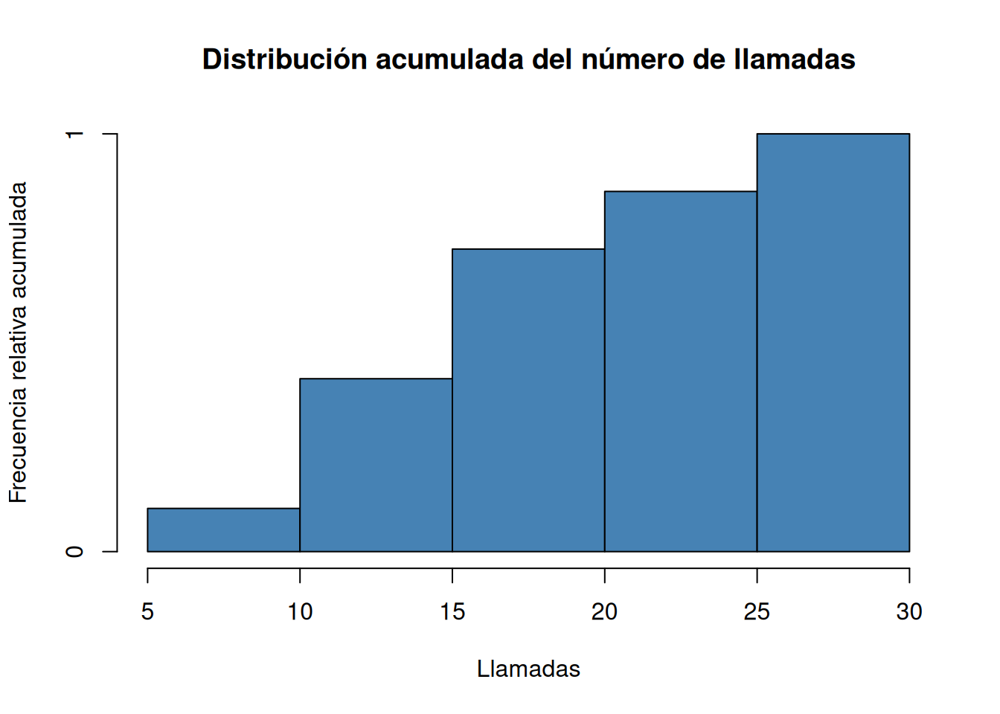
Solución 2
Otra alternativa es usar la función la función geom_histogram del paquete ggplot2.
library(ggplot2)
# Histograma de frecuencias absolutas
ggplot(df, aes(x = llamadas)) +
geom_histogram(breaks = seq(5, 30, 5), fill = "steelblue", col = "white") +
labs(title = "Distribución del número de llamadas", x = "Número de llamadas", y = "Frecuencia absoluta")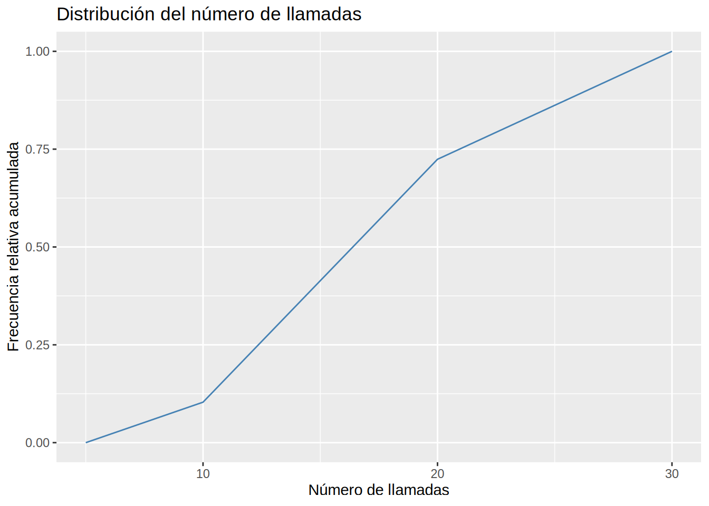
# Histograma de frecuencias relativas
ggplot(df, aes(x = llamadas)) +
geom_histogram(aes(y = (..count..)/sum(..count..)), breaks = seq(5, 30, 5), fill = "steelblue", col = "white") +
labs(title = "Distribución del número de llamadas", x = "Número de llamadas", y = "Frecuencia relativa")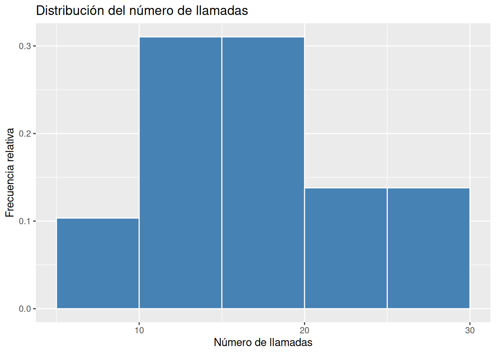
# Histograma de frecuencias acumuladas
ggplot(df, aes(x = llamadas)) +
geom_histogram(aes(y = cumsum(..count..)), breaks = seq(5, 30, 5), fill = "steelblue", col = "white") +
labs(title = "Distribución acumulada del número de llamadas", x = "Número de llamadas", y = "Frecuencia absoluta acumulada")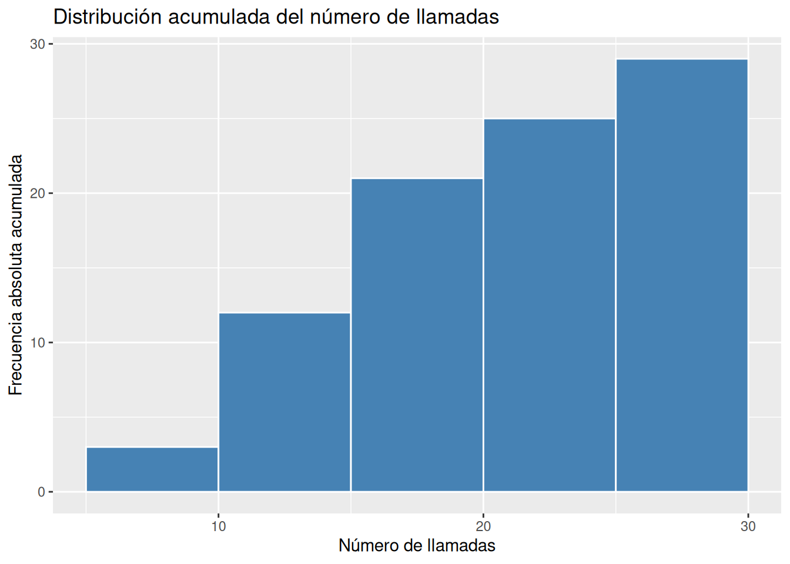
# Histograma de frecuencias relativas acumuladas
ggplot(df, aes(x = llamadas)) +
geom_histogram(aes(y = cumsum(..count..)/sum(..count..)), breaks = seq(5, 30, 5), fill = "steelblue", col = "white") +
labs(title = "Distribución acumulada del número de llamadas", x = "Número de llamadas", y = "Frecuencia relativa acumulada")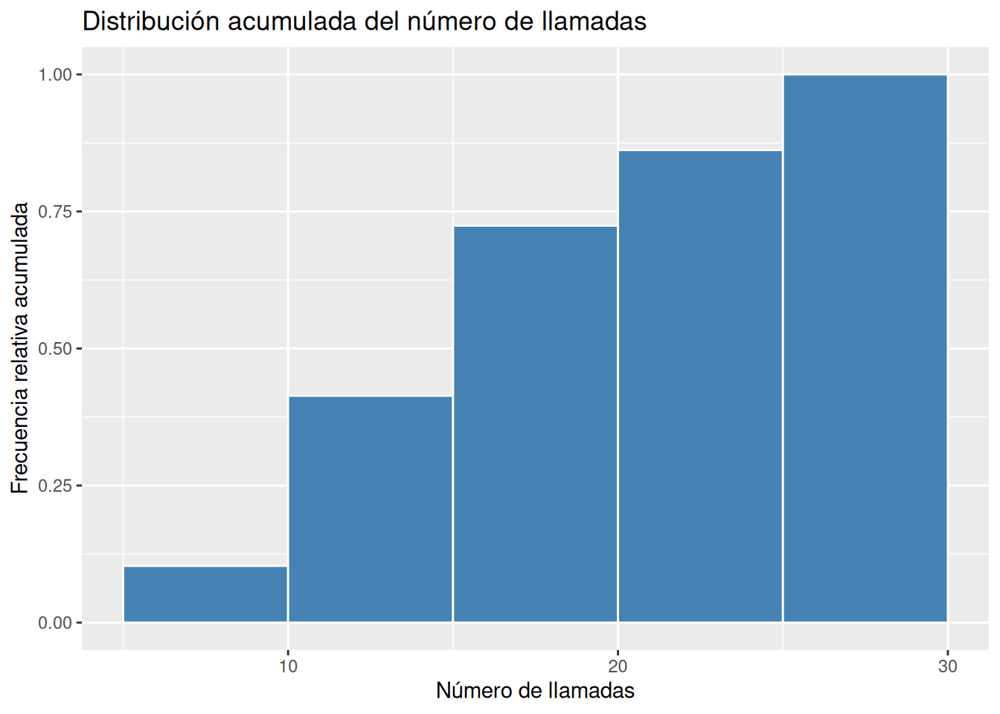
- Dibujar el polígono de frecuencias relativas acumuladas (ojiva).
Solución 1
Para dibujar la ojiva se puede usar la función plot del paquete graphics.
# Ojiva
cortes = seq(5, 30, 5)
ni <- table(cut(df$llamadas, breaks = cortes))
Fi <- c(0, cumsum(ni)/sum(ni))
plot(cortes, Fi, type = "l", col = "steelblue", main = "Distribución acumulada del número de llamadas", xlab = "Número de llamadas", ylab = "Frecuencia relativa acumulada")
Solución 2
Otra alternativa es usar la función la función geom_line del paquete ggplot2.
library(ggplot2)
# Ojiva
cortes <- seq(5, 30, 5)
tabla_frec <- mutate(df, llamadas_int = cut(df$llamadas, breaks = cortes)) %>%
count(llamadas_int) %>%
mutate(cortes = cortes[-1], Fi = cumsum(n)/sum(n)) %>%
select(cortes, Fi)
tabla_frec <- rbind(data.frame(cortes = cortes[1], Fi = 0), tabla_frec)
ggplot(tabla_frec, aes(x = cortes , y = Fi)) +
geom_line(col = "steelblue") +
labs(title = "Distribución del número de llamadas", x = "Número de llamadas", y = "Frecuencia relativa acumulada")Ejercicio 3.3 Los grupos sanguíneos de una muestra de 30 personas son:
| A, B, B, A, AB, 0, 0, A, B, B, A, A, A, A, AB, A, A, A, B, 0, B, B, B, A, A, A, 0, A, AB, 0 |
- Crear un conjunto de datos con la variable
grupo_sanguíneo.
Solución
df <- data.frame(grupo_sanguineo = c("A", "B", "B", "A", "AB", "0", "0", "A", "B", "B", "A", "A", "A", "A", "AB", "A", "A", "A", "B", "0", "B", "B", "B", "A", "A", "A", "0", "A", "AB", "0"))- Construir la tabla de frecuencias.
Solución 1
Para obtener las frecuencias absolutas se puede usar la función table, y para las frecuencias relativas la función prop.table ambas del paquete base de R.
# Frecuencias absolutas.
ni <- table(df$grupo_sanguineo)
# Frecuencias relativas
fi <- prop.table(ni)
tabla_frec <- cbind(ni, fi)
tabla_frec ni fi
0 5 0.1666667
A 14 0.4666667
AB 3 0.1000000
B 8 0.2666667
Solución 2
Otra alternativa es usar la fución count del paquete dplyr.
library(dplyr)
library(knitr)
library(kableExtra)
count(df, grupo_sanguineo) %>%
mutate(fi = n/sum(n)) %>%
kable() %>%
kable_styling(bootstrap_options = "hover", full_width = F)| grupo_sanguineo | n | fi |
|---|---|---|
| 0 | 5 | 0.1666667 |
| A | 14 | 0.4666667 |
| AB | 3 | 0.1000000 |
| B | 8 | 0.2666667 |
- Dibujar el diagrama de sectores.
Solución 1
Para dibujar el diagrama de sectores se puede usar la función pie del paquete graphics.
# Diagrama de sectores
pie(ni, col = 1:length(ni), main = "Distribución de los grupos sanguíneos")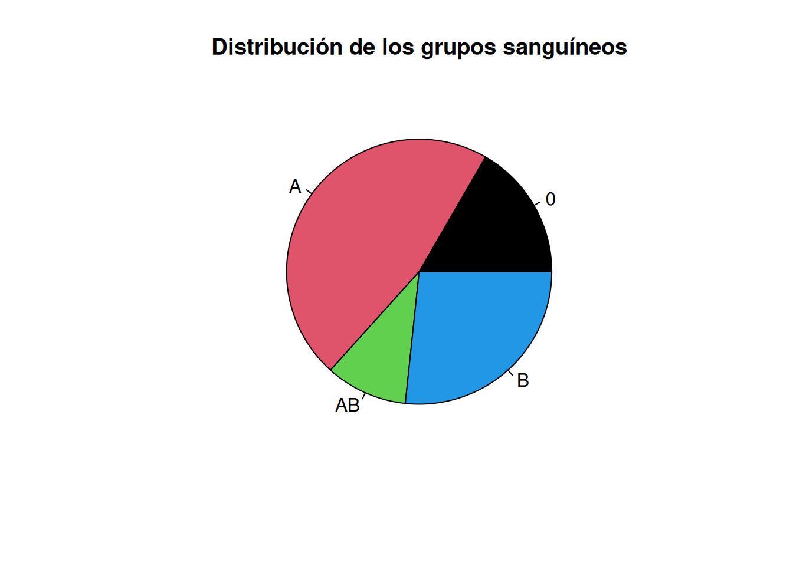
Solución 2
Otra alternativa es usar las fuciones geom_bar y coor_polar del paquete ggplot2.
ggplot(df, aes(x = "", fill = grupo_sanguineo)) +
# Añadir la capa de las barras.
geom_bar() +
# Añadir el sistema de coordenadas polares
coord_polar(theta = "y") +
labs(title = "Distribución de los grupos sanguíneos")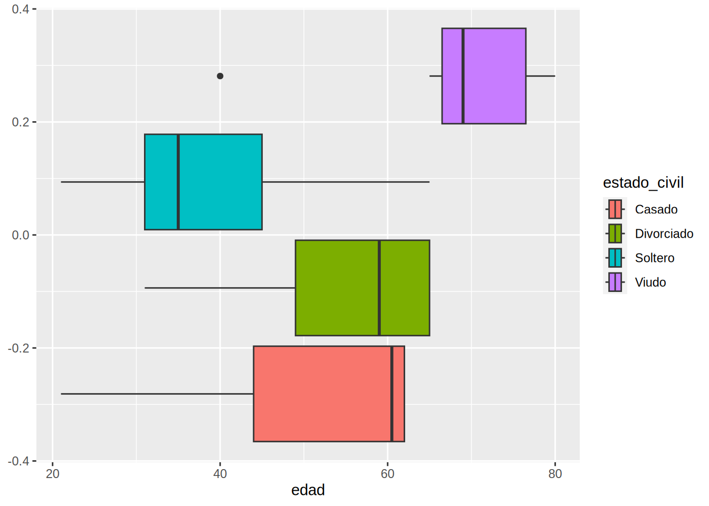
Ejercicio 3.4 En un estudio de población se tomó una muestra de 27 personas, y se les preguntó por su edad y estado civil, obteniendo los siguientes resultados:
| Estado civil | Edad |
|---|---|
| Soltero | 31, 45, 35, 65, 21, 38, 62, 22, 31 |
| Casado | 62, 39, 62, 59, 21, 62 |
| Viudo | 80, 68, 65, 40, 78, 69, 75 |
| Divorciado | 31, 65, 59, 49, 65 |
- Crear un conjunto de datos con la variables
estado_civilyedad.
Solución
df <- data.frame(
edad = c(31, 45, 35, 65, 21, 38, 62, 22, 31, 62, 39, 62, 59, 21, 62, 80, 68, 65, 40, 78, 69, 75, 31, 65, 59, 49, 65),
estado_civil = rep(c("Soltero", "Casado", "Viudo", "Divorciado"), c(9, 6, 7, 5)))- Calcular los tamaños muestrales según
estado_civil.
Solución 1
Usando la función table del paquete base de R podemos obtener las frecuencias absolutas del estado civil que es el tamaño muestral de cada grupo.
table(df$estado_civil)
Casado Divorciado Soltero Viudo
6 5 9 7
Solución 1
Usando las funciones groub_by, summarise y n del paquete dplyr.
library(dplyr)
df %>% group_by(estado_civil) %>%
summarise(n = n())# A tibble: 4 × 2
estado_civil n
<chr> <int>
1 Casado 6
2 Divorciado 5
3 Soltero 9
4 Viudo 7- Construir la tabla de frecuencias de la variable
edadpara cada categoría de la variableestado_civil.
Solución
Para dividir la muestra en grupos se puede usar la función group-by del paquete dplyr.
library(dplyr)
library(knitr)
library(kableExtra)
mutate(df, edad_int = cut(edad, breaks = seq(20, 80, 10))) %>%
group_by(estado_civil) %>%
count(edad_int) %>%
mutate(fi = n/sum(n), Ni = cumsum(n), Fi = cumsum(n)/sum(n)) %>%
kable() %>%
kable_styling(bootstrap_options = "hover", full_width = F)| estado_civil | edad_int | n | fi | Ni | Fi |
|---|---|---|---|---|---|
| Casado | (20,30] | 1 | 0.1666667 | 1 | 0.1666667 |
| Casado | (30,40] | 1 | 0.1666667 | 2 | 0.3333333 |
| Casado | (50,60] | 1 | 0.1666667 | 3 | 0.5000000 |
| Casado | (60,70] | 3 | 0.5000000 | 6 | 1.0000000 |
| Divorciado | (30,40] | 1 | 0.2000000 | 1 | 0.2000000 |
| Divorciado | (40,50] | 1 | 0.2000000 | 2 | 0.4000000 |
| Divorciado | (50,60] | 1 | 0.2000000 | 3 | 0.6000000 |
| Divorciado | (60,70] | 2 | 0.4000000 | 5 | 1.0000000 |
| Soltero | (20,30] | 2 | 0.2222222 | 2 | 0.2222222 |
| Soltero | (30,40] | 4 | 0.4444444 | 6 | 0.6666667 |
| Soltero | (40,50] | 1 | 0.1111111 | 7 | 0.7777778 |
| Soltero | (60,70] | 2 | 0.2222222 | 9 | 1.0000000 |
| Viudo | (30,40] | 1 | 0.1428571 | 1 | 0.1428571 |
| Viudo | (60,70] | 3 | 0.4285714 | 4 | 0.5714286 |
| Viudo | (70,80] | 3 | 0.4285714 | 7 | 1.0000000 |
- Dibujar los diagramas de cajas de la edad según el estado civil. ¿Existen datos atípicos? ¿En qué grupo hay mayor dispersión?
Solución
library(ggplot2)
ggplot(df, aes(x = edad, fill = estado_civil)) +
geom_boxplot()
- Dibujar los histogramas de la edad según el estado civil.
Solución
ggplot(df, aes(x = edad, fill = estado_civil)) +
geom_histogram(breaks = seq(20, 80, 10), position = "identity", alpha=0.4)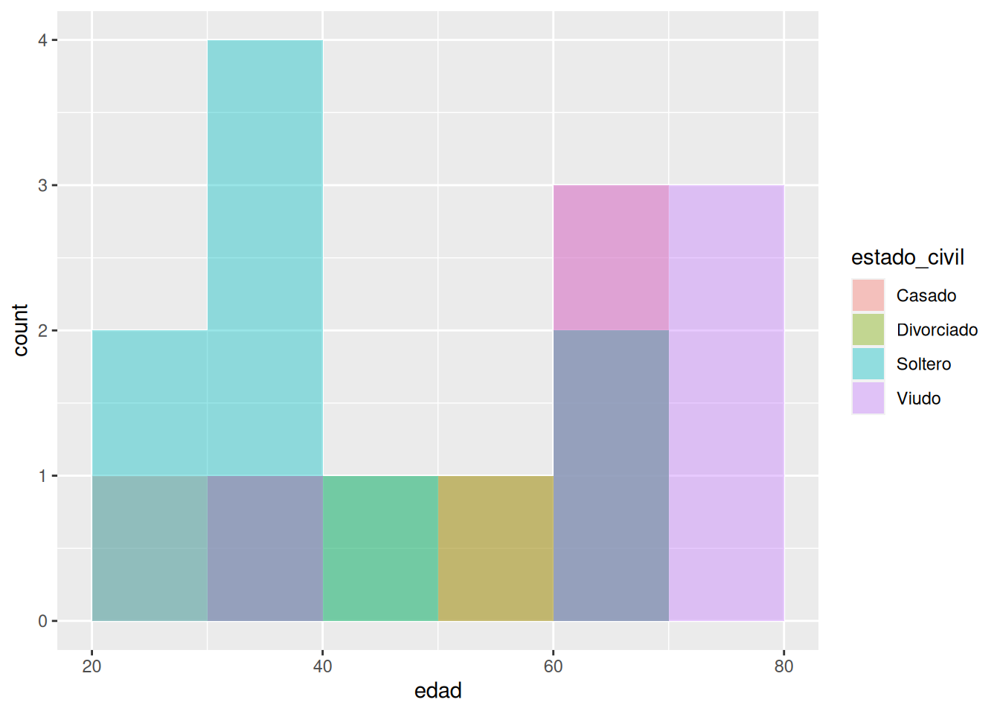
Para dibujar cada histograma por separado se puede usar la función facet_wrap o facet_grid del paquete ggplot2.
ggplot(df, aes(x = edad, fill = estado_civil)) +
geom_histogram(breaks = seq(20, 80, 10)) +
# Añadir la faceta del estado civil
facet_grid(rows = vars(estado_civil))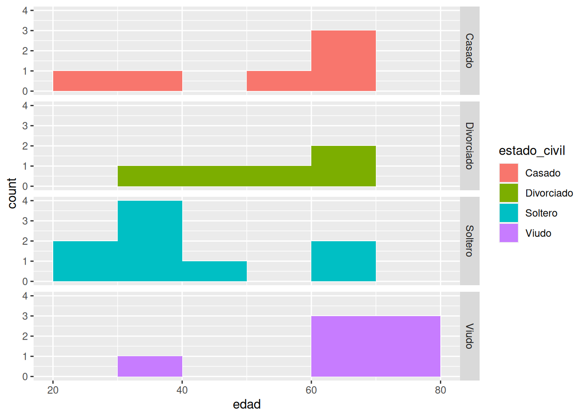
3.2 Ejercicios propuestos
El conjunto de datos neonatos contiene información sobre una muestra de 320 recién nacidos en un hospital durante un año que cumplieron el tiempo normal de gestación.
Construir la tabla de frecuencias de la puntuación Apgar al minuto de nacer. Si se considera que una puntuación Apgar de 3 o menos indica que el neonato está deprimido, ¿qué porcentaje de niños está deprimido en la muestra?
Comparar las distribuciones de frecuencias de las puntuaciones Apgar al minuto de nacer según si la madre es mayor o menor de 20 años. ¿En qué grupo hay más neonatos deprimidos?
Construir la tabla de frecuencias para el peso de los neonatos, agrupando en clases de amplitud \(0.5\) desde el \(2\) hasta el \(4.5\). ¿En qué intervalo de peso hay más neonatos?
Comparar la distribución de frecuencias relativas del peso de los neonatos según si la madre fuma o no. Si se considera como peso bajo un peso menor de \(2.5\) kg, ¿En qué grupo hay un mayor porcentaje de niños con peso bajo?
Si en los recién nacidos se considera como peso bajo un peso menor de \(2.5\) kg, calcular la prevalencia del bajo peso de recién nacidos en el grupo de madres fumadoras y en el de no fumadoras.
Construir el diagrama de barras de la puntuación Apgar al minuto. ¿Qué puntuación Apgar es la más frecuente?
Construir el diagrama de frecuencias relativas acumuladas de la puntuación Apgar al minuto. ¿Por debajo de que puntuación estarán la mitad de los niños?
Comparar mediante diagramas de barras de frecuencias relativas las distribuciones de las puntuaciones Apgar al minuto según si la madre ha fumado o no durante el embarazo. ¿Qué se puede concluir?
Construir el histograma de pesos, agrupando en clases de amplitud \(0.5\) desde el \(2\) hasta el \(4.5\). ¿En qué intervalo de peso hay más niños?
Comparar la distribución de frecuencias relativas del peso de los neonatos según si la madre fuma o no. ¿En qué grupo se aprecia menor peso de los niños de la muestra?
Comparar la distribución de frecuencias relativas del peso de los neonatos según si la madre fumaba o no antes del embarazo. ¿Qué se puede concluir?
Construir el diagrama de caja y bigotes del peso. ¿Entre qué valores se considera que el peso de un neonato es normal? ¿Existen datos atípicos?
Comparar el diagrama de cajas y bigotes del peso, según si la madre fumó o no durante el embarazo y si era mayor o no de 20 años. ¿En qué grupo el peso tiene más dispersión central? ¿En qué grupo pesan menos los niños de la muestra?
Comparar el diagrama de cajas de la puntuación Apgar al minuto y a los cinco minutos. ¿En qué variable hay más dispersión central?